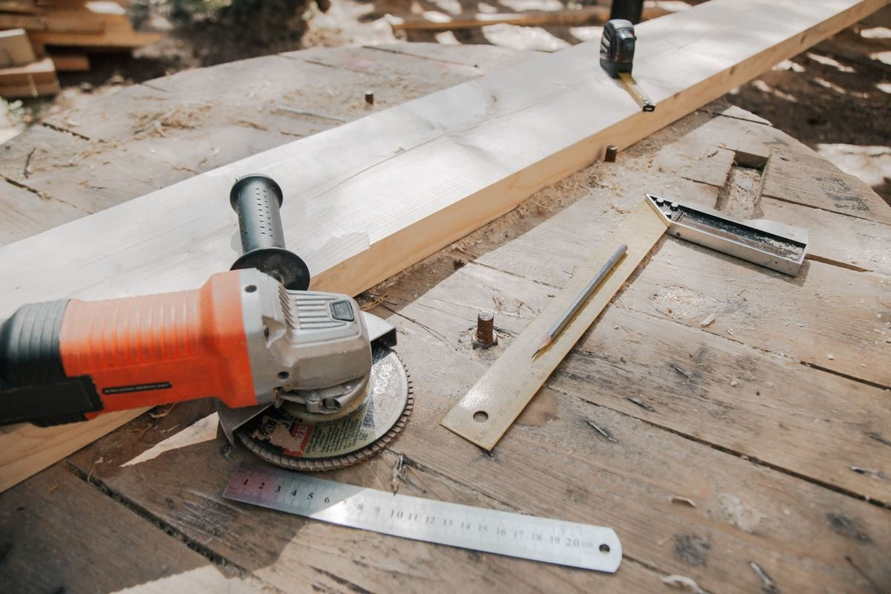
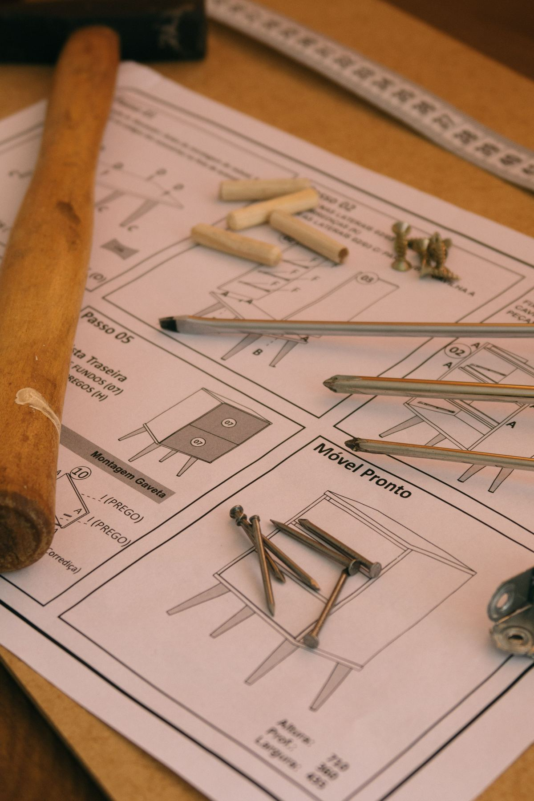

Our Services
Full carpentry services for homeowners, contractors, and businesses across Sandton and all over Gauteng.

Custom Furniture
Tables, chairs, beds, cabinets, and bespoke pieces designed and built to your exact measurements and style.
Kitchen Fitting
Complete kitchen cupboard installs - from initial measure-up to the final fitted finish.
Structural Carpentry
Decking, roof timber work, staircase, and structural carpentry for residential and commercial sites.
General Repairs
Sticking doors, broken drawers, loose joints, and general wood repairs around the home.
Built With Care, Step by Step

Every piece of furniture we build starts with careful planning from measuring and marking out, to assembling each joint by hand. It's this attention to detail that makes sure your furniture is built to last.